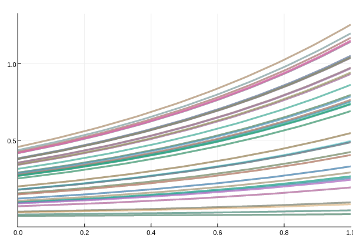
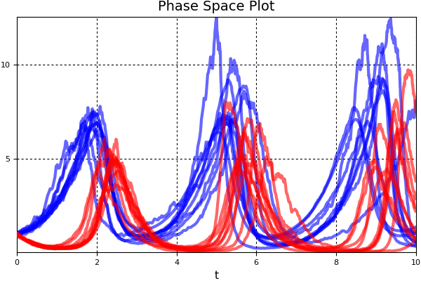
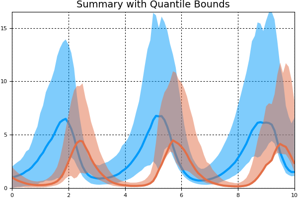
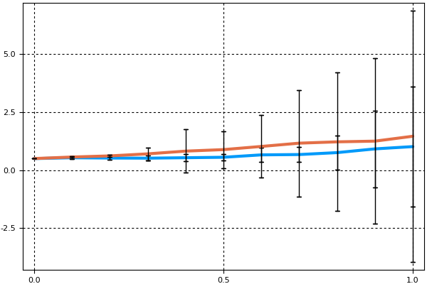

Parallel Ensemble Simulations
Performing Monte Carlo simulations, solving with a predetermined set of initial conditions, and GPU-parallelizing a parameter search all fall under the ensemble simulation interface. This interface allows one to declare a template DEProblem to parallelize, how to tweak the template in trajectories many trajectories, solve each in parallel batches, reduce the solutions down to specific answers, and compute summary statistics on the results.
Performing an Ensemble Simulation
Building a Problem
To perform a simulation on an ensemble of trajectories, define a EnsembleProblem. The constructor is:
EnsembleProblem(prob::DEProblem;
output_func = (sol,i) -> (sol,false),
prob_func= (prob,i,repeat)->(prob),
reduction = (u,data,I)->(append!(u,data),false),
u_init = [], safetycopy = prob_func !== DEFAULT_PROB_FUNC)prob_func: The function by which the problem is to be modified.probis the problem,iis the unique id1:trajectoriesfor the problem, andrepeatis for if the iteration of the repeat. At first it's0, but ifrerunwas true this will be1,2, etc. counting the number of times problemihas been repeated.output_func: The function determines what is saved from the solution to the output array. Defaults to saving the solution itself. The output is(out,rerun)whereoutis the output andrerunis a boolean which designates whether to rerunreduction: This function determines how to reduce the data in each batch. Defaults to appending the data from the batches. The second part of the output determines whether the simulation has converged. Iftrue, the simulation will exit early. By default, this is alwaysfalse.safetycopy: Determines whether a safetydeepcopyis called on theprobbefore theprob_func. By default this is true for any user-givenprob_func, as without this, modifying the arguments of something in theprob_func, such as parameters or caches stored within the user function, are not necessarily thread-safe. If you know that your function is thread-safe, then setting this tofalsecan improve performance when used with threads.
One can specify a function prob_func which changes the problem. For example:
function prob_func(prob,i,repeat)
@. prob.u0 = randn()*prob.u0
prob
endmodifies the initial condition for all of the problems by a standard normal random number (a different random number per simulation). Notice that since problem types are immutable, it uses .=. Otherwise, one can just create a new problem type:
function prob_func(prob,i,repeat)
@. prob.u0 = u0_arr[i]
prob
endIf your function is a ParameterizedFunction, you can do similar modifications to prob.f to perform a parameter search. The output_func is a reduction function. It's arguments are the generated solution and the unique index for the run. For example, if we wish to only save the 2nd coordinate at the end of each solution, we can do:
output_func(sol,i) = (sol[end,2],false)Thus the ensemble simulation would return as its data an array which is the end value of the 2nd dependent variable for each of the runs.
Solving the Problem
sim = solve(prob,alg,ensemblealg,kwargs...)The keyword arguments take in the arguments for the common solver interface and will pass them to the differential equation solver. The ensemblealg is optional, and will default to EnsembleThreads(). The special keyword arguments to note are:
trajectories: The number of simulations to run. This argument is required.batch_size: The size of the batches on which the reductions are applies. Defaults totrajectories.pmap_batch_size: The size of thepmapbatches. Default isbatch_size÷100 > 0 ? batch_size÷100 : 1
EnsembleAlgorithms
The choice of ensemble algorithm allows for control over how the multiple trajectories are handled. Currently, the ensemble algorithm types are:
EnsembleSerial()- No parallelismEnsembleThreads()- The default. This uses multithreading. It's local (single computer, shared memory) parallelism only. Fastest when the trajectories are quick.EnsembleDistributed()- Usespmapinternally. It will use as many processors as you have Julia processes. To add more processes, useaddprocs(n). See Julia's documentation for more details. Recommended for the case when each trajectory calculation isn't "too quick" (at least about a millisecond each?).EnsembleSplitThreads()- This uses threading on each process, splitting the problem intonprocs()even parts. This is for solving many quick trajectories on a multi-node machine. It's recommended you have one process on each node.EnsembleGPUArray()- Requires installing andusing DiffEqGPU. This uses a GPU for computing the ensemble with hyperparallelism. It will automatically recompile your Julia functions to the GPU. A standard GPU sees a 5x performance increase over a 16 core Xeon CPU. However, there are limitations on what functions can auto-compile in this fashion, please see the DiffEqGPU README for more details
For example, EnsembleThreads() is invoked by:
solve(ensembleprob,alg,EnsembleThreads();trajectories=1000)Solution Type
The resulting type is a EnsembleSimulation, which includes the array of solutions.
Plot Recipe
There is a plot recipe for a AbstractEnsembleSimulation which composes all of the plot recipes for the component solutions. The keyword arguments are passed along. A useful argument to use is linealpha which will change the transparency of the plots. An additional argument is idxs which allows you to choose which components of the solution to plot. For example, if the differential equation is a vector of 9 values, idxs=1:2:9 will plot only the solutions of the odd components. An other additional argument is zcolors (an alias of marker_z) which allows you to pass a zcolor for each series. For details about zcolor see the Series documentation for Plots.jl.
Analyzing an Ensemble Experiment
Analysis tools are included for generating summary statistics and summary plots for a EnsembleSimulation.
To use this functionality, import the analysis module via:
using DifferentialEquations.EnsembleAnalysis(or more directly DiffEqBase.EnsembleAnalysis).
Time steps vs time points
For the summary statistics, there are two types. You can either summarize by time steps or by time points. Summarizing by time steps assumes that the time steps are all the same time point, i.e. the integrator used a fixed dt or the values were saved using saveat. Summarizing by time points requires interpolating the solution.
Analysis at a time step or time point
get_timestep(sim,i) # Returns an iterator of each simulation at time step i
get_timepoint(sim,t) # Returns an iterator of each simulation at time point t
componentwise_vectors_timestep(sim,i) # Returns a vector of each simulation at time step i
componentwise_vectors_timepoint(sim,t) # Returns a vector of each simulation at time point tSummary Statistics
Single Time Statistics
The available functions for time steps are:
timestep_mean(sim,i) # Computes the mean of each component at time step i
timestep_median(sim,i) # Computes the median of each component at time step i
timestep_quantile(sim,q,i) # Computes the quantile q of each component at time step i
timestep_meanvar(sim,i) # Computes the mean and variance of each component at time step i
timestep_meancov(sim,i,j) # Computes the mean at i and j, and the covariance, for each component
timestep_meancor(sim,i,j) # Computes the mean at i and j, and the correlation, for each component
timestep_weighted_meancov(sim,W,i,j) # Computes the mean at i and j, and the weighted covariance W, for each componentThe available functions for time points are:
timepoint_mean(sim,t) # Computes the mean of each component at time t
timepoint_median(sim,t) # Computes the median of each component at time t
timepoint_quantile(sim,q,t) # Computes the quantile q of each component at time t
timepoint_meanvar(sim,t) # Computes the mean and variance of each component at time t
timepoint_meancov(sim,t1,t2) # Computes the mean at t1 and t2, the covariance, for each component
timepoint_meancor(sim,t1,t2) # Computes the mean at t1 and t2, the correlation, for each component
timepoint_weighted_meancov(sim,W,t1,t2) # Computes the mean at t1 and t2, the weighted covariance W, for each componentFull Timeseries Statistics
Additionally, the following functions are provided for analyzing the full timeseries. The mean and meanvar versions return a DiffEqArray which can be directly plotted. The meancov and meancor return a matrix of tuples, where the tuples are the (mean_t1,mean_t2,cov or cor).
The available functions for the time steps are:
timeseries_steps_mean(sim) # Computes the mean at each time step
timeseries_steps_median(sim) # Computes the median at each time step
timeseries_steps_quantile(sim,q) # Computes the quantile q at each time step
timeseries_steps_meanvar(sim) # Computes the mean and variance at each time step
timeseries_steps_meancov(sim) # Computes the covariance matrix and means at each time step
timeseries_steps_meancor(sim) # Computes the correlation matrix and means at each time step
timeseries_steps_weighted_meancov(sim) # Computes the weighted covariance matrix and means at each time stepThe available functions for the time points are:
timeseries_point_mean(sim,ts) # Computes the mean at each time point in ts
timeseries_point_median(sim,ts) # Computes the median at each time point in ts
timeseries_point_quantile(sim,q,ts) # Computes the quantile q at each time point in ts
timeseries_point_meanvar(sim,ts) # Computes the mean and variance at each time point in ts
timeseries_point_meancov(sim,ts) # Computes the covariance matrix and means at each time point in ts
timeseries_point_meancor(sim,ts) # Computes the correlation matrix and means at each time point in ts
timeseries_point_weighted_meancov(sim,ts) # Computes the weighted covariance matrix and means at each time point in tsEnsembleSummary
The EnsembleSummary type is included to help with analyzing the general summary statistics. Two constructors are provided:
EnsembleSummary(sim;quantile=[0.05,0.95])
EnsembleSummary(sim,ts;quantile=[0.05,0.95])The first produces a (mean,var) summary at each time step. As with the summary statistics, this assumes that the time steps are all the same. The second produces a (mean,var) summary at each time point t in ts. This requires the ability to interpolate the solution. Quantile is used to determine the qlow and qhigh quantiles at each timepoint. It defaults to the 5% and 95% quantiles.
Plot Recipe
The EnsembleSummary comes with a plot recipe for visualizing the summary statistics. The extra keyword arguments are:
idxs: the solution components to plot. Defaults to plotting all components.error_style: The style for plotting the error. Defaults toribbon. Other choices are:barsfor error bars and:nonefor no error bars.ci_type: Defaults to:quantilewhich has(qlow,qhigh)quantiles whose limits were determined when constructing theEnsembleSummary. Gaussian CI1.96*(standard error of the mean)can be set usingci_type=:SEM.
One useful argument is fillalpha which controls the transparency of the ribbon around the mean.
Example 1: Solving an ODE With Different Initial Conditions
Random Initial Conditions
Let's test the sensitivity of the linear ODE to its initial condition. To do this, we would like to solve the linear ODE 100 times and plot what the trajectories look like. Let's start by opening up some extra processes so that way the computation will be parallelized. Here we will choose to use distributed parallelism which means that the required functions must be made available to all processes. This can be achieved with @everywhere macro:
using Distributed
using DifferentialEquations
using Plots
addprocs()
@everywhere using DifferentialEquationsNow let's define the linear ODE which is our base problem:
# Linear ODE which starts at 0.5 and solves from t=0.0 to t=1.0
prob = ODEProblem((u,p,t)->1.01u,0.5,(0.0,1.0))For our ensemble simulation, we would like to change the initial condition around. This is done through the prob_func. This function takes in the base problem and modifies it to create the new problem that the trajectory actually solves. Here we will take the base problem, multiply the initial condition by a rand(), and use that for calculating the trajectory:
@everywhere function prob_func(prob,i,repeat)
remake(prob,u0=rand()*prob.u0)
endNow we build and solve the EnsembleProblem with this base problem and prob_func:
ensemble_prob = EnsembleProblem(prob,prob_func=prob_func)
sim = solve(ensemble_prob,Tsit5(),EnsembleDistributed(),trajectories=100)We can use the plot recipe to plot what the 100 ODEs look like:
plotly()
plot(sim,linealpha=0.4)
We note that if we wanted to find out what the initial condition was for a given trajectory, we can retrieve it from the solution. sim[i] returns the ith solution object. sim[i].prob is the problem that specific trajectory solved, and sim[i].prob.u0 would then be the initial condition used in the ith trajectory.
Note: If the problem has callbacks, the functions for the condition and affect! must be named functions (not anonymous functions).
Using multithreading
The previous ensemble simulation can also be parallelized using a multithreading approach, which will make use of the different cores within a single computer. Because the memory is shared across the different threads, it is not necessary to use the @everywhere macro. Instead, the same problem can be implemented simply as:
using DifferentialEquations
prob = ODEProblem((u,p,t)->1.01u,0.5,(0.0,1.0))
function prob_func(prob,i,repeat)
remake(prob,u0=rand()*prob.u0)
end
ensemble_prob = EnsembleProblem(prob,prob_func=prob_func)
sim = solve(ensemble_prob,Tsit5(),EnsembleThreads(),trajectories=100)The number of threads to be used has to be defined outside of Julia, in the environmental variable JULIA_NUM_THREADS (see Julia's documentation for details).
Pre-Determined Initial Conditions
In many cases, you may already know what initial conditions you want to use. This can be specified by the i argument of the prob_func. This i is the unique index of each trajectory. So, if we have trajectories=100, then we have i as some index in 1:100, and it's different for each trajectory.
So, if we wanted to use a grid of evenly spaced initial conditions from 0 to 1, we could simply index the linspace type:
initial_conditions = range(0, stop=1, length=100)
function prob_func(prob,i,repeat)
remake(prob,u0=initial_conditions[i])
endIt's worth noting that if you run this code successfully, there will be no visible output.
Example 2: Solving an SDE with Different Parameters
Let's solve the same SDE but with varying parameters. Let's create a Lotka-Volterra system with multiplicative noise. Our Lotka-Volterra system will have as its drift component:
function f(du,u,p,t)
du[1] = p[1] * u[1] - p[2] * u[1]*u[2]
du[2] = -3 * u[2] + u[1]*u[2]
endFor our noise function we will use multiplicative noise:
function g(du,u,p,t)
du[1] = p[3]*u[1]
du[2] = p[4]*u[2]
endNow we build the SDE with these functions:
p = [1.5,1.0,0.1,0.1]
prob = SDEProblem(f,g,[1.0,1.0],(0.0,10.0),p)This is the base problem for our study. What would like to do with this experiment is keep the same parameters in the deterministic component each time, but very the parameters for the amount of noise using 0.3rand(2) as our parameters. Once again, we do this with a prob_func, and here we modify the parameters in prob.p:
function prob_func(prob,i,repeat)
x = 0.3rand(2)
remake(prob,p=[p[1:2];x])
endNow we solve the problem 10 times and plot all of the trajectories in phase space:
ensemble_prob = EnsembleProblem(prob,prob_func=prob_func)
sim = solve(ensemble_prob,SRIW1(),trajectories=10)
using Plots; plotly()
using Plots; plot(sim,linealpha=0.6,color=:blue,vars=(0,1),title="Phase Space Plot")
plot!(sim,linealpha=0.6,color=:red,vars=(0,2),title="Phase Space Plot")
We can then summarize this information with the mean/variance bounds using a EnsembleSummary plot. We will take the mean/quantile at every 0.1 time units and directly plot the summary:
summ = EnsembleSummary(sim,0:0.1:10)
pyplot() # Note that plotly does not support ribbon plots
plot(summ,fillalpha=0.5)
Note that here we used the quantile bounds, which default to [0.05,0.95] in the EnsembleSummary constructor. We can change to standard error of the mean bounds using ci_type=:SEM in the plot recipe.
Example 3: Using the Reduction to Halt When Estimator is Within Tolerance
In this problem we will solve the equation just as many times as needed to get the standard error of the mean for the final time point below our tolerance 0.5. Since we only care about the endpoint, we can tell the output_func to discard the rest of the data.
function output_func(sol,i)
last(sol)
endOur prob_func will simply randomize the initial condition:
# Linear ODE which starts at 0.5 and solves from t=0.0 to t=1.0
prob = ODEProblem((u,p,t)->1.01u,0.5,(0.0,1.0))
function prob_func(prob,i,repeat)
remake(prob,u0=rand()*prob.u0)
endOur reduction function will append the data from the current batch to the previous batch, and declare convergence if the standard error of the mean is calculated as sufficiently small:
function reduction(u,batch,I)
u = append!(u,batch)
finished = (var(u) / sqrt(last(I))) / mean(u) < 0.5
u, finished
endThen we can define and solve the problem:
prob2 = EnsembleProblem(prob,prob_func=prob_func,output_func=output_func,reduction=reduction,u_init=Vector{Float64}())
sim = solve(prob2,Tsit5(),trajectories=10000,batch_size=20)Since batch_size=20, this means that every 20 simulations, it will take this batch, append the results to the previous batch, calculate (var(u)/sqrt(last(I)))/mean(u), and if that's small enough, exit the simulation. In this case, the simulation exits only after 20 simulations (i.e. after calculating the first batch). This can save a lot of time!
In addition to saving time by checking convergence, we can save memory by reducing between batches. For example, say we only care about the mean at the end once again. Instead of saving the solution at the end for each trajectory, we can instead save the running summation of the endpoints:
function reduction(u,batch,I)
u+sum(batch),false
end
prob2 = EnsembleProblem(prob,prob_func=prob_func,output_func=output_func,reduction=reduction,u_init=0.0)
sim2 = solve(prob2,Tsit5(),trajectories=100,batch_size=20)this will sum up the endpoints after every 20 solutions, and save the running sum. The final result will have sim2.u as simply a number, and thus sim2.u/100 would be the mean.
Example 4: Using the Analysis Tools
In this example we will show how to analyze a EnsembleSolution. First, let's generate a 10 solution Monte Carlo experiment. For our problem we will use a 4x2 system of linear stochastic differential equations:
function f(du,u,p,t)
for i = 1:length(u)
du[i] = 1.01*u[i]
end
end
function σ(du,u,p,t)
for i in 1:length(u)
du[i] = .87*u[i]
end
end
prob = SDEProblem(f,σ,ones(4,2)/2,(0.0,1.0)) #prob_sde_2DlinearTo solve this 10 times, we use the EnsembleProblem constructor and solve with trajectories=10. Since we wish to compare values at the timesteps, we need to make sure the steps all hit the same times. Thus we set adaptive=false and explicitly give a dt.
prob2 = EnsembleProblem(prob)
sim = solve(prob2,SRIW1(),dt=1//2^(3),trajectories=10,adaptive=false)Note that if you don't do the timeseries_steps calculations, this code is compatible with adaptive timestepping. Using adaptivity is usually more efficient!
We can compute the mean and the variance at the 3rd timestep using:
m,v = timestep_meanvar(sim,3)or we can compute the mean and the variance at the t=0.5 using:
m,v = timepoint_meanvar(sim,0.5)We can get a series for the mean and the variance at each time step using:
m_series,v_series = timeseries_steps_meanvar(sim)or at chosen values of t:
ts = 0:0.1:1
m_series = timeseries_point_mean(sim,ts)Note that these mean and variance series can be directly plotted. We can compute covariance matrices similarly:
timeseries_steps_meancov(sim) # Use the time steps, assume fixed dt
timeseries_point_meancov(sim,0:1//2^(3):1,0:1//2^(3):1) # Use time points, interpolateFor general analysis, we can build a EnsembleSummary type.
summ = EnsembleSummary(sim)will summarize at each time step, while
summ = EnsembleSummary(sim,0.0:0.1:1.0)will summarize at the 0.1 time points using the interpolations. To visualize the results we can plot it. Since there are 8 components to the differential equation, this can get messy, so let's only plot the 3rd component:
plot(summ;idxs=3)
We can change to errorbars instead of ribbons and plot two different indices:
plot(summ;idxs=(3,5),error_style=:bars)
Or we can simply plot the mean of every component over time:
plot(summ;error_style=:none)